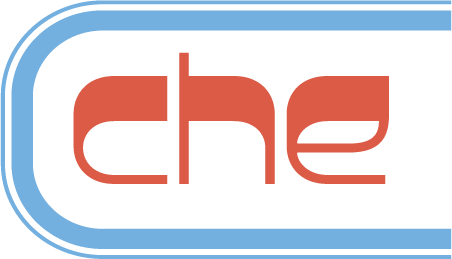
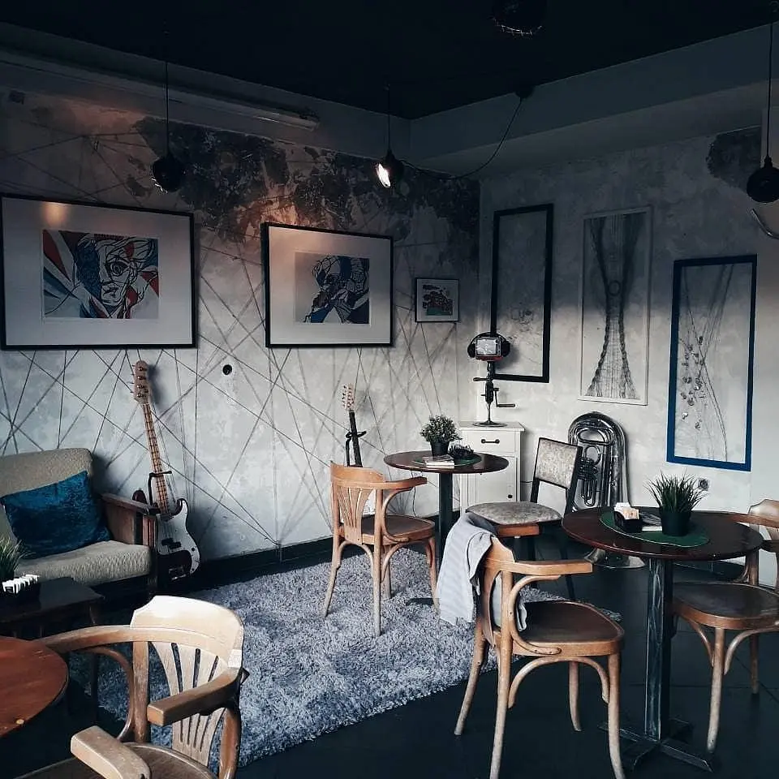
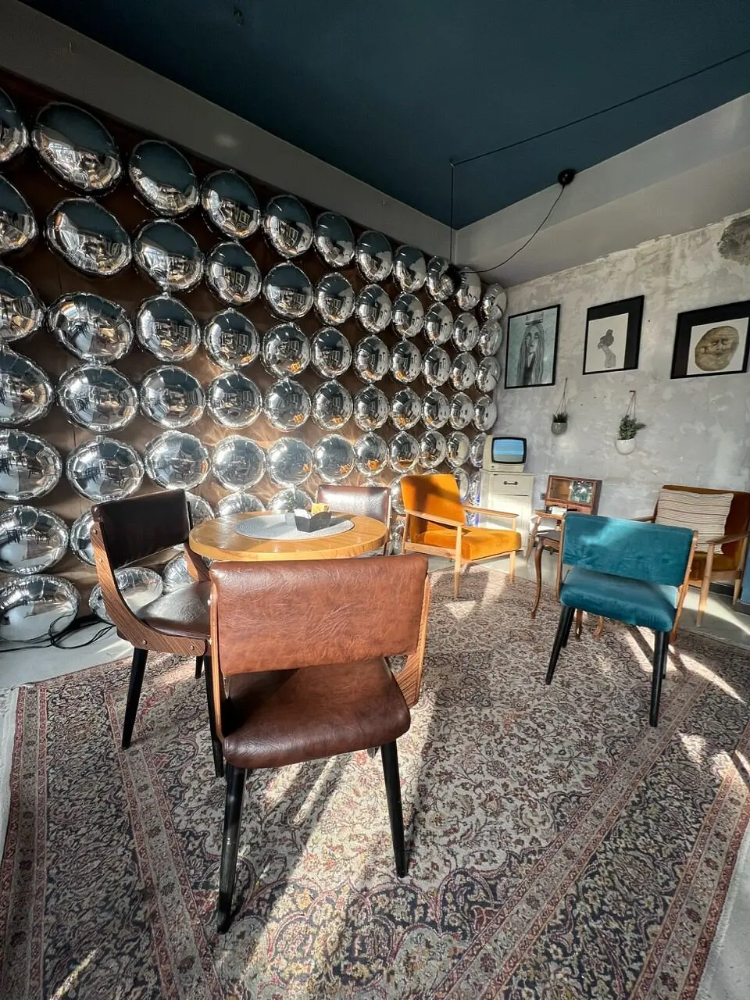
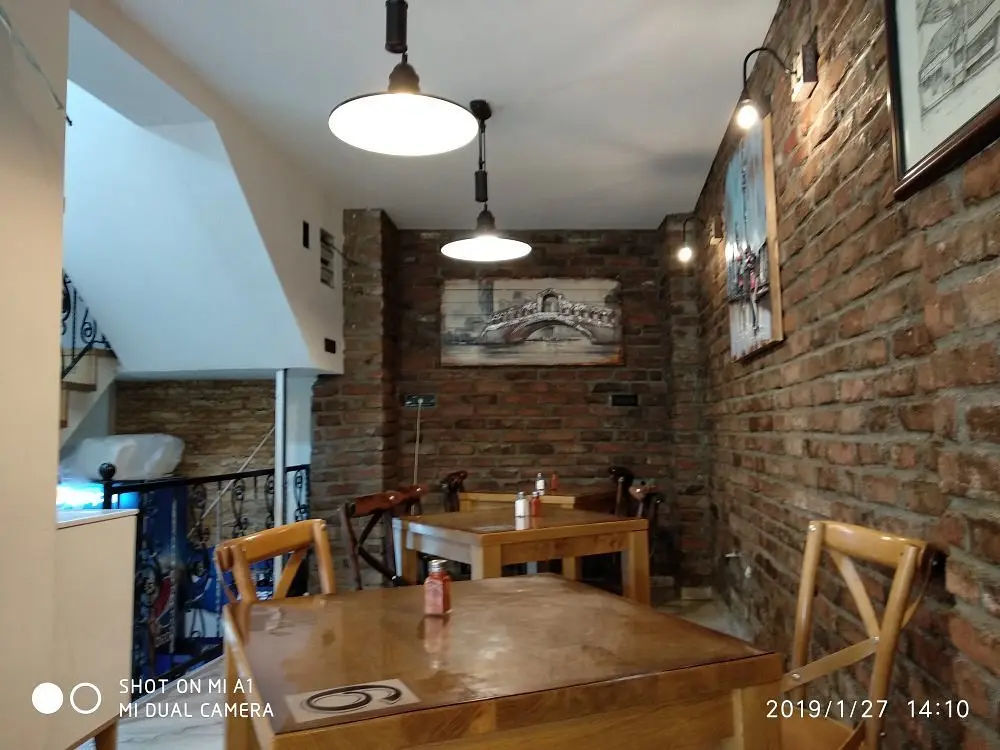
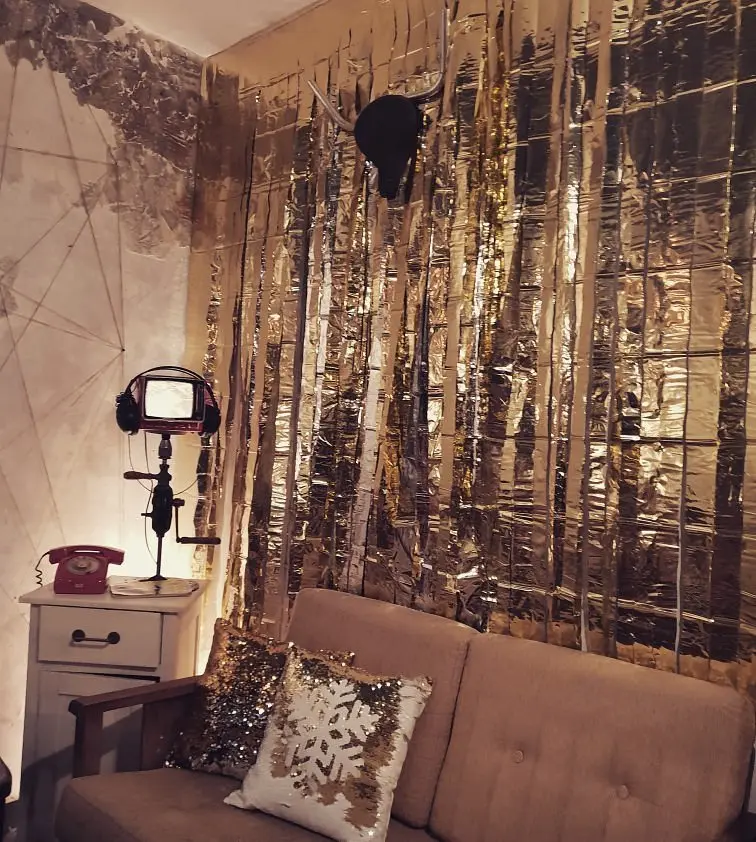

Cool place, soft music, not loud. Nice to hangout.
Fahim SGoogle review

КАЈ УНИВЕРЗАЛНА · СКОПЈЕ
DIY vintage бар со меко светло, ладно пиво и плејлиста што не ја остава атмосферата на случајност.

ЗА ЧЕ
Стари телевизори, радија, гитари, постери и предмети со свој живот. Че не се обидува да изгледа винтиџ. Едноставно е создавано парче по парче, од луѓе што сакаат добар муабет и уште подобра музика.

РИТАМ
Од првото утринско кафе до последниот вечерен муабет, музиката е дел од просторот. Доволно присутна за да ја почувствуваш. Доволно тивка за да се слушнете.


РЕЦЕНЗИИ
Cool place, soft music, not loud. Nice to hangout.
Fahim SGoogle review
This cafe has a great music collection.
Onur YGoogle review
Coffee and service were remarkable. It’s a beautiful and artistic place with a special vibe.
UriyurmanGoogle review
ПОСЕТИ НÈ